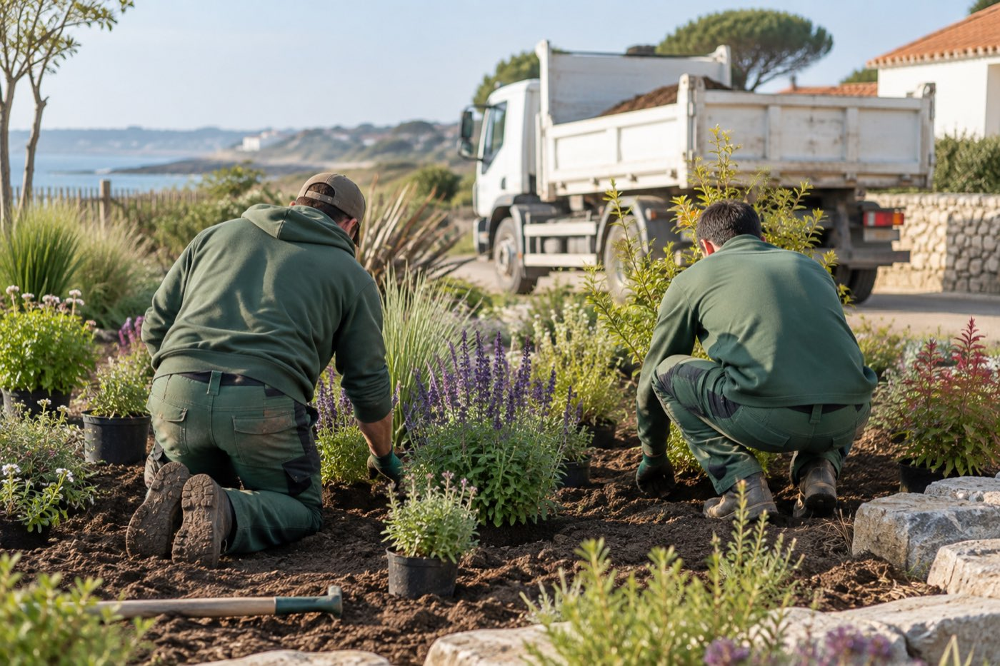
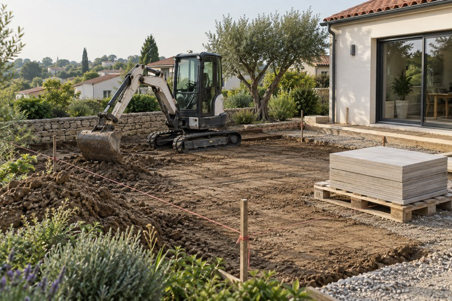
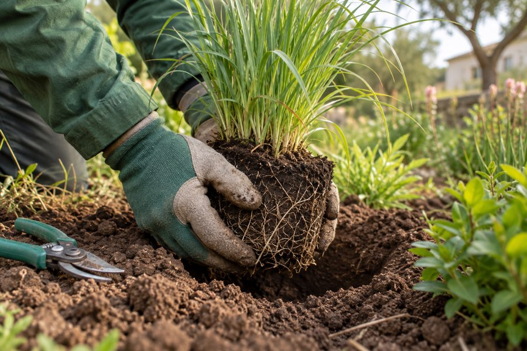

L'entreprise
Six personnes qui plantent elles-mêmes ce qu'elles dessinent.
Terre & Sève a été fondée en 2011 par Julien Renaud, paysagiste formé au lycée horticole de La Mothe-Achard. L'atelier est à La Roche-sur-Yon, l'équipe n'a pas changé depuis 2019.

Notre façon de travailler
Nos engins, notre équipe, un calendrier écrit.
Nous ne sous-traitons ni le terrassement ni la plantation. Ce sont les deux moments où un jardin se rate, et nous préférons y être.
Chaque chantier a un calendrier remis avant le premier coup de pelle. Un point par semaine avec vous, en personne ou par photos si vous n'êtes pas sur place. Le chantier est nettoyé chaque soir : pas de palette qui traîne un mois devant chez vous.
Les plantes
Des végétaux qui viennent de Vendée et qui y restent.
Nous achetons chez deux pépinières du département. Les plants ont poussé dans notre climat, ils ne découvrent pas nos étés secs en arrivant chez vous.
Nous plantons petit : un plant jeune s'installe mieux qu'un sujet forcé en pot, et il coûte moins cher. Ce que vous perdez la première année en volume, vous le gagnez la troisième en santé. Nous repassons au printemps suivant pour remplacer ce qui n'a pas pris.

L'équipe
Qui vous verrez sur le chantier.
- Julien RenaudFondateur, conception et plans. C'est lui que vous voyez à la visite et qui dessine le jardin.
- Marion GuibertCheffe d'équipe plantation. Choisit les végétaux avec les pépinières et suit la première année.
- Thomas BulteauMaçonnerie paysagère et terrasses. Vingt ans de pierre sèche, dont douze chez nous.
- Léa, Antoine et KarimOuvriers paysagistes. Terrassement, pose, plantation. Une apprentie chaque année depuis 2015.
Noms donnés en exemple sur ce site de démonstration.
Où nous intervenons
Jusqu'à 45 minutes de l'atelier.
Au-delà, nous perdons trop de temps sur la route et vous le payez. Nous préférons le dire.
- La Roche-sur-Yon
- Les Sables-d'Olonne
- Aizenay
- Talmont-Saint-Hilaire
- Mouilleron-le-Captif
- La Mothe-Achard
- Challans
- Saint-Gilles-Croix-de-Vie
- Luçon
- Chantonnay
- Les Herbiers
- Brétignolles-sur-Mer
On vient voir votre terrain.
Une heure sur place, sans engagement. Nous vous rappelons sous 48 heures pour fixer la date.